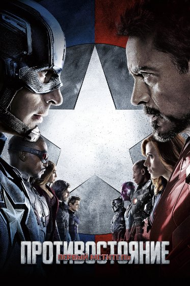
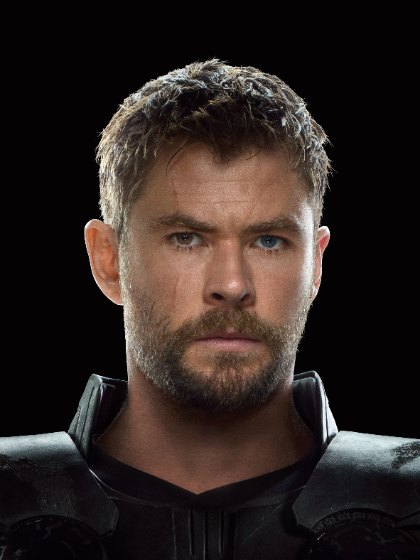
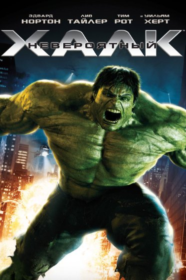

Что, если бы Тор и Халк участвовали в «Противостоянии»?
Соковийский договор расколол Мстителей в момент, когда рядом не было двух самых сильных участников — Тора и Халка. Изменилось бы всё, если бы они оказались на Земле?

Нельзя уверенно записать Тора к Стиву, а Бэннера — к Тони. У каждого есть причины сомневаться в обоих лагерях. Их присутствие могло привести к переговорам раньше — либо резко увеличить масштаб катастрофы.
Почему они вообще пропустили конфликт?
Во время событий «Противостояния» Тор отсутствует на Земле, а Халк после «Эры Альтрона» оказывается на Сакааре, как позднее выясняется в «Рагнарёке». Комедийная «Команда Тора» показывает альтернативное шуточное объяснение и не должна подменять основную хронологию.
Отсутствие обоих персонажей позволило конфликту сконцентрироваться на политике, доверии и личной истории Стива и Тони — без участия бойцов, способных разрушить аэропорт за несколько минут.
Чью сторону выбрал бы Тор?
Тор — представитель другого мира и будущий правитель Асгарда. Земная система государственного контроля над супергероями не обязательно кажется ему легитимной. Это сближает его с позицией Стива Роджерса.
С другой стороны, после Заковии Тор мог бы счесть требования ответственности обоснованными. Вероятнее, он попытался бы стать посредником, но уверенно назвать его сторонником одного лагеря нельзя.

А как поступил бы Бэннер?
Брюс хорошо знает опасность неконтролируемой силы и может понимать необходимость надзора. Однако он лично сталкивался с преследованием генералом Россом. Почему Бэннер должен довериться именно Россу, который ранее пытался захватить Халка?
Даже если Бэннер согласился бы с идеей правил, превращение в Халка меняло бы всё: ярость и случайные разрушения трудно вписать в несмертельную схватку между друзьями.

Как изменилась бы битва в аэропорту?
Если Тор поддержал бы одну команду, баланс сил был бы резко нарушен. Если Халк вмешался бы в бой, участникам стало бы ещё труднее удержать конфликт в безопасных пределах.
Однако именно эта угроза могла бы принудить противников к переговорам. У Тора также был бы шанс использовать уважение обеих сторон, чтобы остановить эскалацию, не выбирая лагеря.
Сибирь и последующее вторжение Таноса
Земо сталкивает Стива и Тони из-за правды о гибели родителей Старка. Присутствие Тора и Халка не отменяет этого открытия. Возможно, дополнительные посредники помогли бы команде сохранить диалог, но никакая физическая мощь не лечит предательство и травму автоматически.
Если бы раскол удалось предотвратить, в 2018 году Мстители, вероятно, встретили бы вторжение сплочённее. Но даже объединённая команда не имела гарантированного ответа на шесть Камней.
Наиболее убедительная альтернативная история — не «Тор победил бы аэропорт», а попытка остановить конфликт до того, как он сломал доверие героев. Все варианты здесь остаются гипотезами, не каноном.
Источники и метод
Отделяем то, что показано в фильмах, от комментариев создателей и гипотез. Материал содержит интерпретации, не выдаваемые за канон.
Иллюстрации взяты из имеющейся медиатеки KVM Guide. Они не заменяют покадровую проверку описанных сцен.